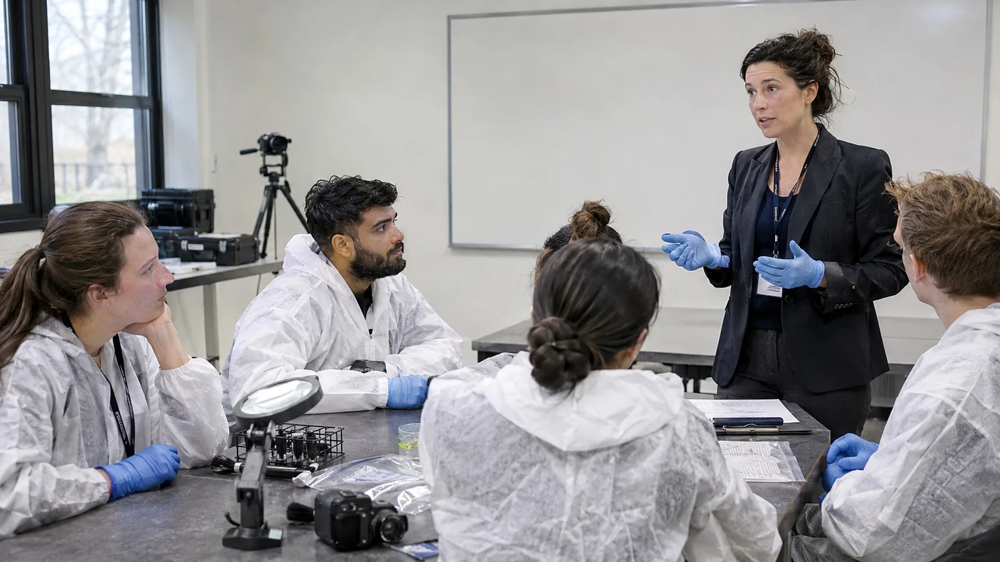

Instituto Integral San Geronimo
Formación y servicios en ciencias forenses.
Explorá la escritura, el análisis documental y la perfilación criminal. Cursos, capacitaciones y servicios profesionales.

Tres áreas para empezar
Encontrá tu campo de estudio.
Un espacio para estudiar con criterio.
El instituto nace con una propuesta de formación y servicios en grafología forense, grafoanálisis científico y perfilación criminal.
Una institución en etapa de apertura
La presentación institucional y la oferta académica están en desarrollo. Los avales nacionales aún no están confirmados; se publicará la documentación correspondiente cuando esté disponible.
¿Quiénes pueden acercarse?
Personas interesadas en iniciar su formación y profesionales que buscan profundizar en un área. Cada programa indicará los conocimientos previos requeridos.
Equipo docente y certificaciones
Los nombres, las credenciales del equipo y las condiciones de certificación se confirmarán para cada capacitación. Ningún ejemplo de esta web acredita una habilitación profesional.
¿Cómo consulto por una capacitación?
Explorá el programa y escribinos por WhatsApp. Antes de inscribirte, confirmá la modalidad, el calendario, el arancel y el alcance de la certificación.
Del concepto a la práctica
Observar. Documentar. Fundamentar.
Una forma de acercarte al trabajo forense: estudiar el método, hacer preguntas y reconocer los límites de cada análisis.
Elegí un área
Revisá el nivel, los contenidos y los requisitos de cada propuesta.
Conocé el programa
Explorá los módulos y las actividades antes de decidir.
Consultá tu inscripción
Confirmá fechas, modalidad y condiciones con el instituto.
Oferta académica · vista de demostración
Un programa para cada interés.
Buscá por tema, compará los programas y elegí por dónde empezar.
Los cursos, programas, modalidades y aranceles que ves son ejemplos. La oferta definitiva, las fechas, los docentes y los avales se confirman con el instituto.
No encontramos cursos con esa combinación.
Programas de ejemplo · sin inscripción activa
Además de la formación
Servicios profesionales en ciencias forenses.
- 01
Grafología forense
Consultas vinculadas con la escritura, las firmas y el análisis documental.
- 02
Grafoanálisis científico
Estudio de material gráfico con definición previa del objetivo y los límites del análisis.
- 03
Perfilación criminal
Asesoramiento y análisis de información según las características de la consulta.
Conversemos sobre tu próximo paso
Tu formación empieza con una buena pregunta.
Contanos qué área te interesa y consultá por las próximas capacitaciones.